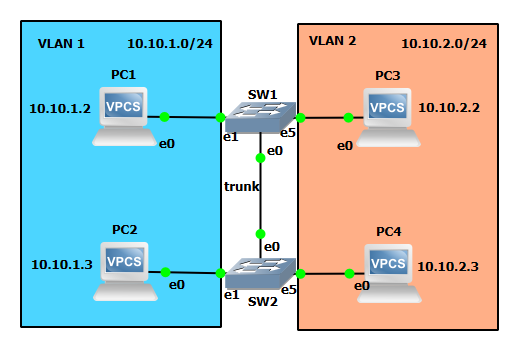
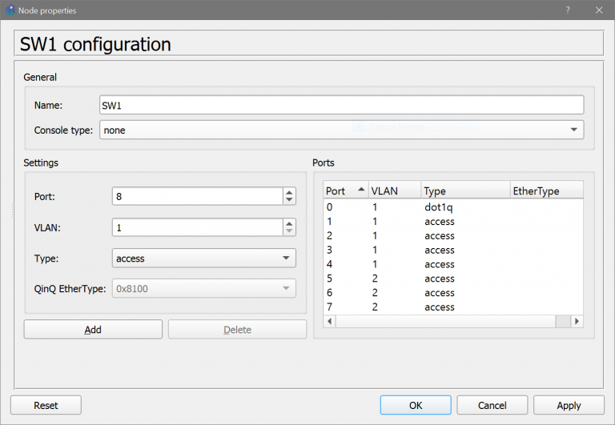
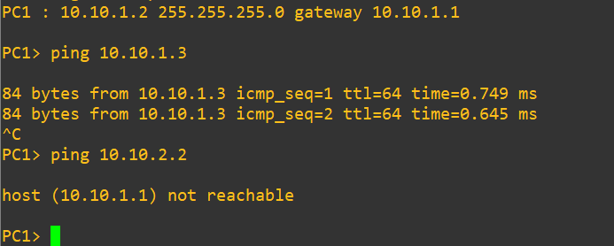
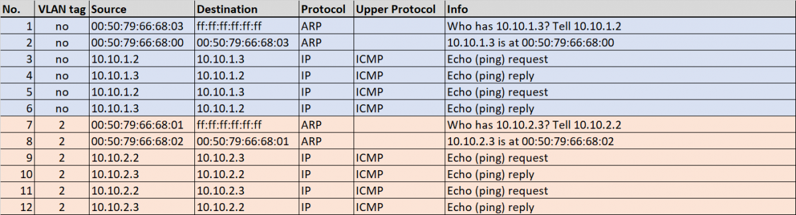

Lab #10
Two VLANs spanning two switches
The purpose of this lab is to show how two VLANs can be extended across two different switches.
Experiment steps
- Recreate the following topology in GNS3. Choose the "GNS3 VM" server to instantiate all the devices of this lab.

The two switches SW1 and SW2 are connected by means of a trunk link, i.e. a link connecting ports of the two switches configured in trunk mode (802.1q).
- When the devices are still inactive, right-click on the SW1 switch icon and configure it as follows:
- port 0 configured in trunk mode (802.1q) and assigned natively to VLAN 1;
- ports 1, 2, 3, 4 configured in access mode and assigned to VLAN 1 (default VLAN);
- ports 5, 6, 7 configured in access mode and assigned to VLAN 2.

- Likewise, right-click on the SW2 switch icon and configure it exactly as SW1, i.e. as follows:
- port 0 configured in trunk mode (802.1q) and assigned natively to VLAN 1;
- ports 1, 2, 3, 4 configured in access mode and assigned to VLAN 1 (default VLAN);
- ports 5, 6, 7 configured in access mode and assigned to VLAN 2.
Notice that the trunk link is connected to port 0 of both SW1 and SW2.
VLAN 1 traffic is transmitted as untagged frames on the trunk link.
VLAN 2 traffic is transmitted as 802.1q tagged frames with VLAN ID 2.
- Start all devices.
- Start capture on link connecting SW1 to SW2.
- Open PC1 terminal and execute the command:
ip 10.10.1.2/24 10.10.1.1
- Open PC2 terminal and execute the command:
ip 10.10.1.3/24 10.10.1.1
- Open PC3 terminal and execute the command:
ip 10.10.2.2/24 10.10.2.1
- Open PC4 terminal and execute the command:
ip 10.10.2.3/24 10.10.2.1
Notice that PC1 and PC2 are configured with a default gateway address 10.10.1.1, but, in fact, this address is not associated to any device.
Likewise, PC3 and PC4 are configured with a default gateway address 10.10.2.1, but, in fact, this address is not associated to any device.
- In PC1 terminal execute the command:
ping 10.10.1.3
and verify that answers are received from PC2.
ping 10.10.2.2
and verify that answers are NOT received from PC3.

- In PC3 terminal execute the command:
ping 10.10.2.3
and verify that answers are received from PC4.
ping 10.10.1.2
and verify that answers are NOT received from PC1.
Since there is no inter-VLAN routing, the two VLANs are isolated.
Hence, PC1 can only ping PC2, while PC3 can only ping PC4.
Traffic analysis
The following picture shows a sequence of packets captured by Wireshark on the trunk link connecting switch SW1 with SW2 when PC1 pings PC2.

Return to list of labs
Copyright (c) 2024 - Roberto Canonico
Last updated: 24/09/2024 by Roberto Canonico